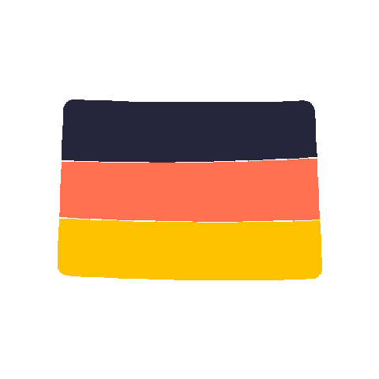
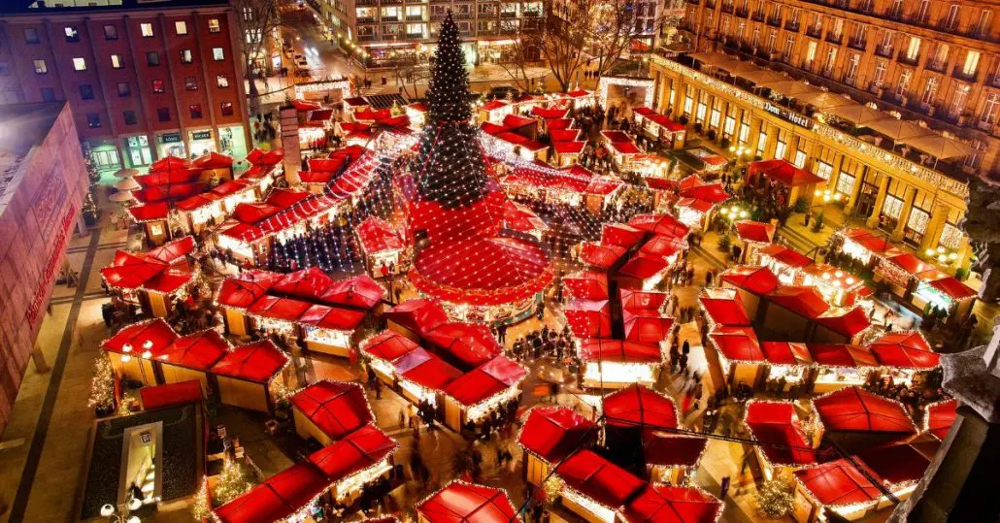
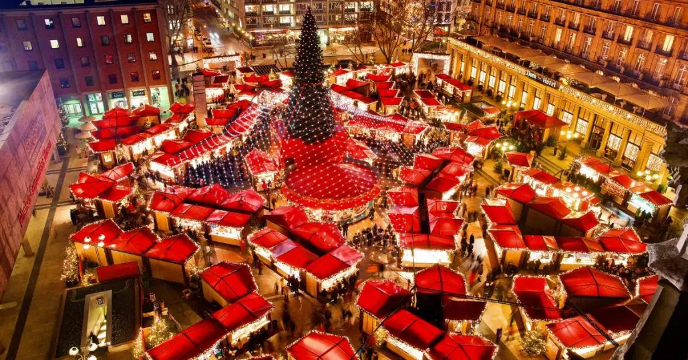

Niemcy
Xmas w Niemczech
W Niemczech Boże Narodzenie, zwane "Weihnachten", to jedno z najważniejszych i najbardziej tradycyjnych świąt. Atmosfera świąteczna rozpoczyna się już w grudniu, a sama Wigilia i Boże Narodzenie są czasem głęboko zakorzenionych tradycji i rytuałów.
Adwent i Jarmarki Świąteczne
Rodziny spędzają czas razem, wieszając świece adwentowe i otwierając kolejne okienka kalendarza adwentowego. Jarmarki świąteczne (Weihnachtsmarkt) są ikonicznym elementem, miasta przyozdabiają się, a stoiska oferują ozdoby, rękodzieło, tradycyjne potrawy i gorący napój Glühwein.
Święta Wspólnie w Rodzinie
W Wigilię (Heiligabend), 24 grudnia, rodziny zbierają się na wspólne świętowanie. Tradycyjnie w tym dniu pod choinką są już prezenty, które są otwierane wieczorem. Wieczerza wigilijna jest wyjątkowym czasem, podczas którego spożywa się potrawy takie jak sałatka ziemniaczana (Kartoffelsalat) z kiełbasą (Würstchen) lub rybą.
Boże Narodzenie
25 i 26 grudnia to właściwe dni Bożego Narodzenia. To czas spędzany z rodziną, gdzie śniadania i obiady są uroczyste. Tradycyjne potrawy obejmują pieczeń, gęsinę, kluski i różnorodne desery, jak piernik (Lebkuchen), makowiec (Mohnkuchen) czy ciasta z owocami (Stollen).
Choinka i Kolędy
Tradycyjnie 24 grudnia wieczorem rodziny dekorują choinkę (Weihnachtsbaum). W okolicy choinki śpiewa się kolędy (Weihnachtslieder), a cała rodzina skupia się na otwarciu prezentów.
Tradycje
W Niemczech Boże Narodzenie jest obchodzone zgodnie z głęboko zakorzenionymi tradycjami, które tworzą wyjątkowy klimat świąteczny:
- Adwent- Niemcy wieszają adwentowe wieńce z czterema świecami, zapalając jedną świecę w każdą niedzielę Adwentu. W każdy dzień adwentowy otwierane są okienka kalendarza adwentowego.
- Jarmarki Świąteczne- stoiska oferują ozdoby, rękodzieło, tradycyjne potrawy i gorący napój Glühwein (grzane wino).
- Wieczerza Wigilijna- 24 grudnia, rodziny zbierają się na wieczerzę. Popularne potrawy to sałatka ziemniaczana z kiełbasą lub rybą. Po wieczerzy otwierane są prezenty spod choinki.
- Ozdoby Choinkowe- ozdabianie choinek (Weihnachtsbaum) różnorodnymi ozdobami, bombkami, światełkami i pięknymi dekoracjami.
- Betlejemskie Szopki- Betlejemskie szopki są popularnymi dekoracjami, które wiele rodzin wystawia w swoich domach, przedstawiając sceny związane z narodzeniem Jezusa.
- Tradycyjne Kolędy- wiele rodzin zbiera się wokół choinki, śpiewając kolędy.
 

Te tradycje stanowią integralną część Bożego Narodzenia w Niemczech, tworząc wyjątkową atmosferę i umacniając więzi rodzinne oraz społeczne.
Potrawy
Kuchnia w Niemczech jest niesamowicie zróżnicowana i zależy od regionu, kultury i preferencji kulinarnej danej społeczności, niektórymi z dań są:
- Christstollen- tradycyjny bożonarodzeniowy placek z owocami i orzechami, często posypany cukrem pudrem, reprezentujący związki z tradycją świąteczną.
- Lebkuchen- słodkie pierniki z miodem, przyprawione cynamonem, goździkami i innymi przyprawami. Są bardzo popularne w okresie świątecznym.
- Weihnachtsgans- pieczona gęś, często nadziewana jabłkami i innymi owocami, jest tradycyjną potrawą na świątecznym stole.
- Kartoffelsalat und Würstchen- sałatka ziemniaczana z kiełbasą to jedno z najbardziej popularnych dań wigilijnych w niektórych regionach Niemiec.
- Bratäpfel- jabłka pieczone z nadzieniem z rodzynek, orzechów i cynamonu, podawane jako deser.
- Kluski Kartoflane (Kartoffelklöße)- rodzaj klusek ziemniaczanych, podawanych z sosem, mięsem lub jako dodatek do potraw mięsnych.
- Pieczony Karp- w niektórych regionach popularny jest karp pieczony lub smażony, który jest spożywany w Wigilię.
Te dania są tradycyjnymi elementami świątecznego menu w Niemczech, chociaż potrawy mogą się różnić w zależności od regionu.